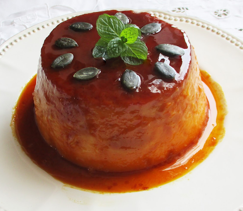

Pumpkin Flan
Home

Description
Pumpkin flan is a creamy and flavorful custard dessert, perfect for autumn or festive occasions.
This flan combines smooth pumpkin puree with eggs, milk, and warm spices like cinnamon and nutmeg,
all baked to silky perfection. A drizzle of caramel sauce adds sweetness and a beautiful golden color.
Rich in vitamins from the pumpkin and full of comforting flavors, this dessert is both delicious and visually appealing.
Serve it chilled, garnished with a touch of whipped cream or toasted pumpkin seeds for an elegant presentation.
Ingredients (4 servings)
- 400 g pumpkin puree
- 4 eggs
- 400 ml whole milk
- 120 g sugar (plus extra for caramel)
- 1 teaspoon vanilla extract
- 1 teaspoon ground cinnamon
- ¼ teaspoon ground nutmeg
- Pinch of salt
Steps
- Preheat your oven to 180°C (350°F).
- Prepare the caramel by melting 50 g of sugar in a small saucepan over medium heat until golden brown, then pour it into the bottom of your flan molds or ramekins.
- In a large bowl, whisk together the eggs and remaining sugar until smooth.
- Add the pumpkin puree, milk, vanilla extract, cinnamon, nutmeg, and salt, and mix until fully combined.
- Pour the pumpkin custard mixture over the caramel in the molds.
- Place the molds in a baking dish and fill the dish with hot water halfway up the sides of the molds (bain-marie).
- Bake for 45-55 minutes, or until the flan is set but still slightly jiggly in the center.
- Remove from the oven and let cool to room temperature, then refrigerate for at least 2 hours before serving.
- To serve, run a knife around the edges of the flan and invert onto a plate so the caramel is on top.